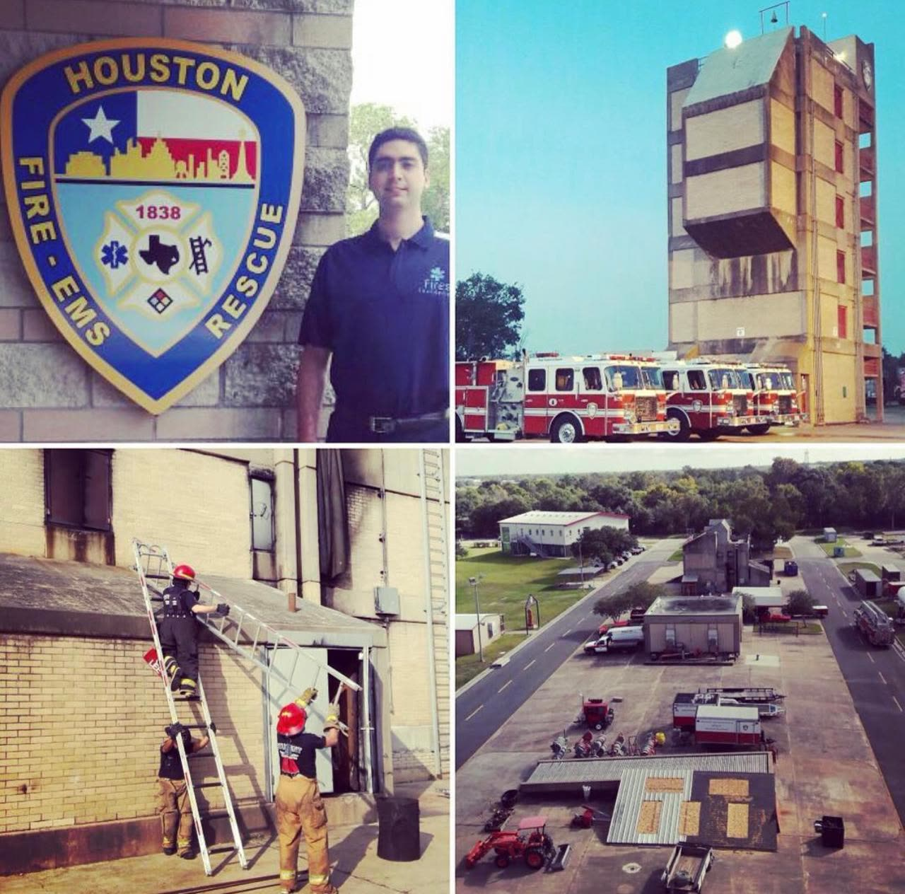
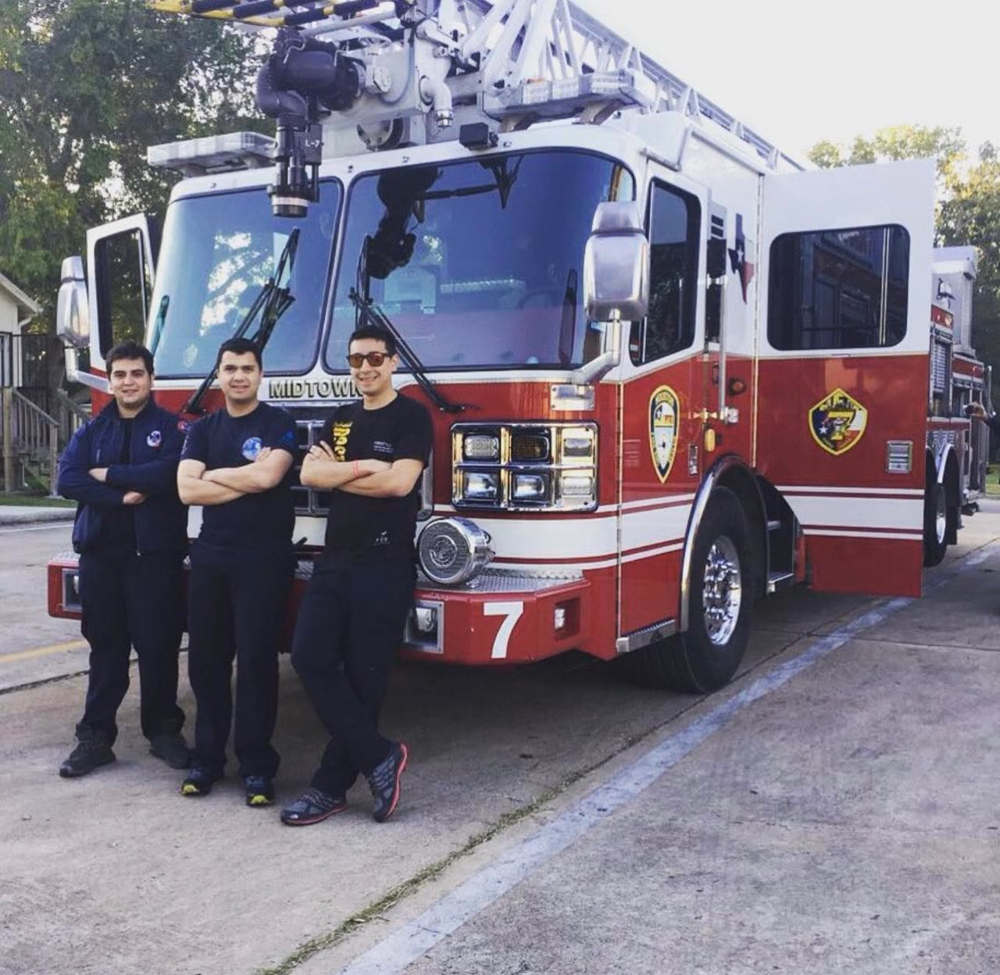
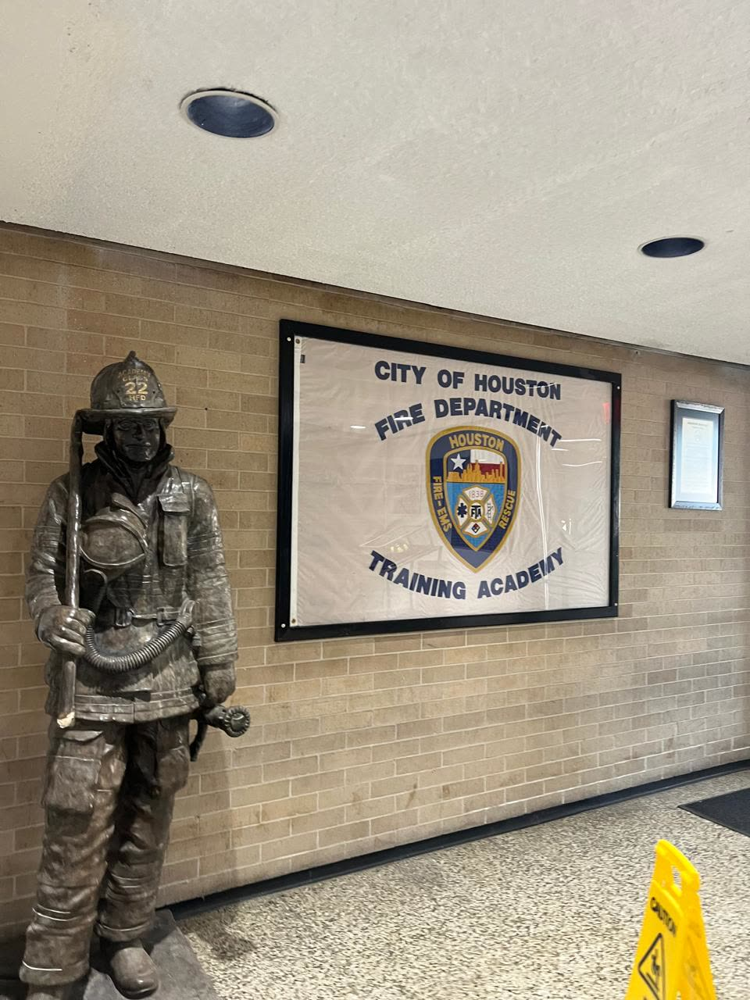
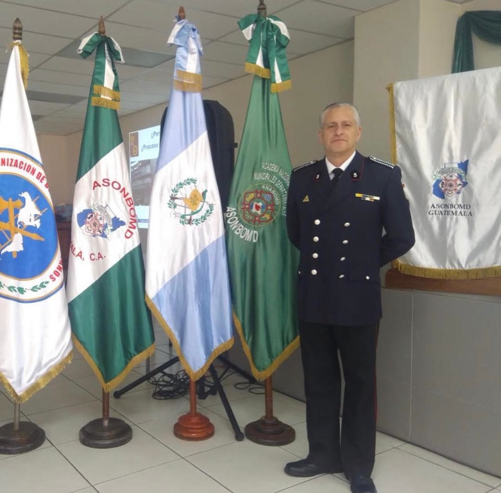
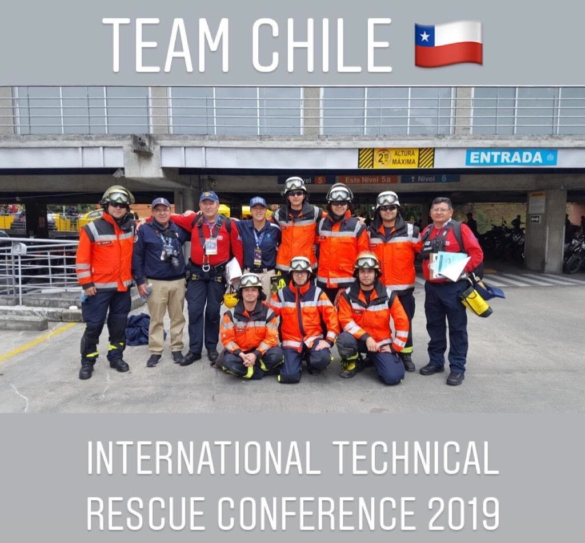
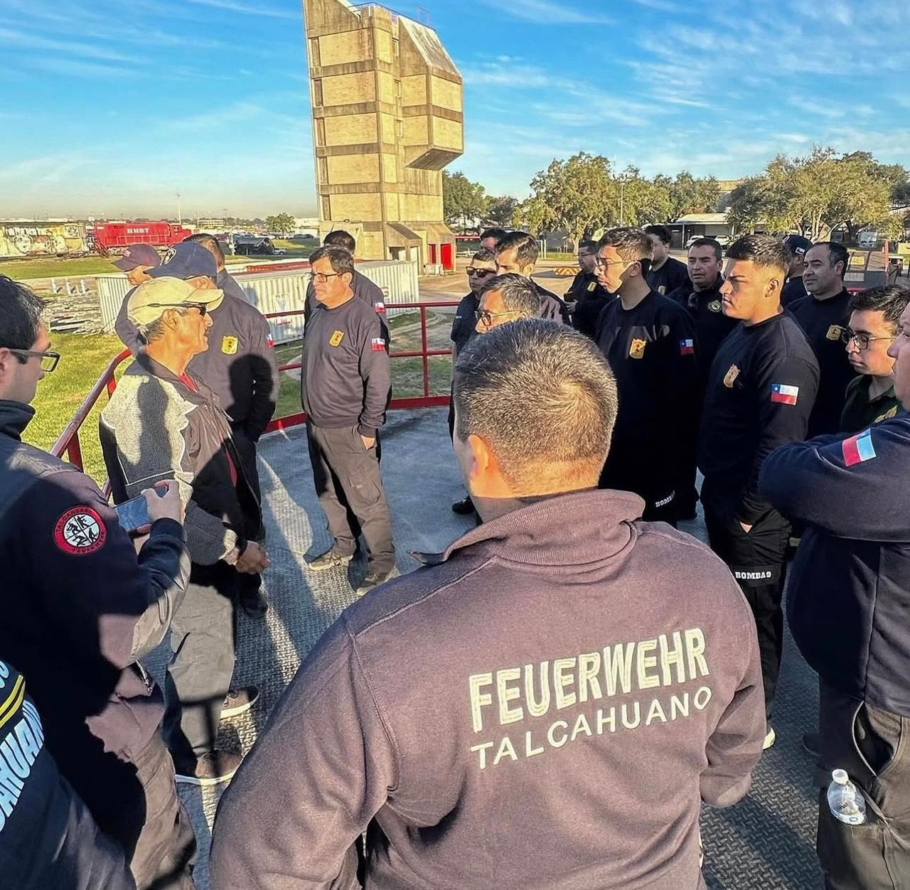
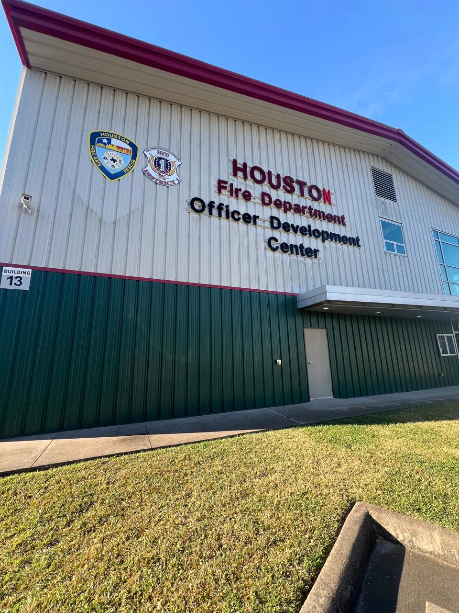
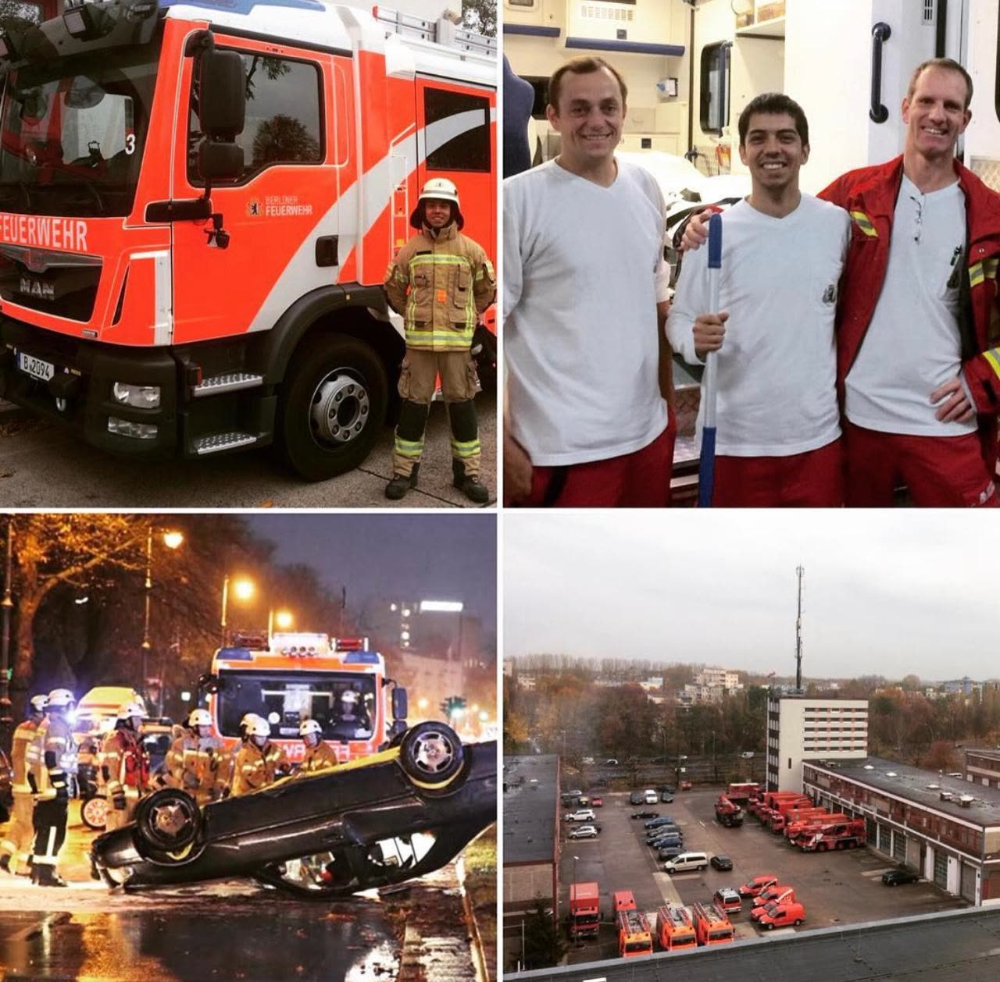
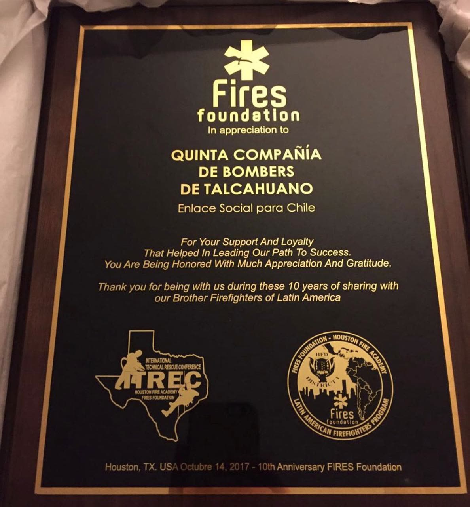

La capacitación y el perfeccionamiento continuo constituyen uno de los pilares fundamentales de nuestra Compañía, siendo esenciales para el desarrollo de las competencias técnicas, operativas y humanas de sus integrantes.
A través de un proceso formativo permanente, buscamos garantizar una preparación integral de nuestros voluntarios, fortaleciendo sus capacidades de respuesta ante emergencias y reafirmando nuestro compromiso de entregar un servicio profesional, eficiente y seguro a la comunidad de Talcahuano.
Formación y capacitación permanente
La formación de nuestros voluntarios se desarrolla mediante un programa progresivo de instrucción técnica y operativa, orientado principalmente al combate de incendios, rescate vehicular, rescate técnico y atención prehospitalaria. Este proceso se complementa con una preparación permanente basada en los valores de disciplina, responsabilidad, respeto y vocación de servicio, principios fundamentales de nuestra identidad como compañía.
Asimismo, la Compañía mantiene un programa de capacitación continua que contempla cursos de especialización en diversas áreas, tales como investigación de incendios, manejo de materiales peligrosos, combate de incendios forestales, rescate urbano y otras disciplinas relacionadas con los nuevos desafíos que enfrenta la actividad bomberil, especialmente aquellos derivados de la evolución de las emergencias, el desarrollo urbano y los efectos del cambio climático.
En concordancia con los lineamientos de la Academia Nacional de Bomberos de Chile, nuestra Quinta Compañía promueve activamente la participación de sus integrantes en instancias de formación, certificación y perfeccionamiento, tanto a nivel nacional como internacional, complementando la capacitación institucional con programas especializados impartidos por organismos de reconocida trayectoria.
Estandarización y certificación de competencias
Uno de los hitos más relevantes en materia de capacitación ha sido la incorporación de programas de formación complementarios a los impartidos por la Academia Nacional de Bomberos, destacando la realización de los cursos Bombero I y Bombero II, conforme a la norma internacional NFPA 1001. Estas instancias de formación se han desarrollado en coordinación con Fires Foundation y la Academia de Bomberos de Houston, Estados Unidos, permitiendo fortalecer y estandarizar los conocimientos, habilidades y procedimientos operativos de nuestros integrantes bajo estándares internacionales.
Como resultado de este proceso, actualmente el 95 % del personal operativo de nuestra Compañía cuenta con formación correspondiente a los niveles Bombero I y Bombero II, constituyendo un importante avance en el cumplimiento de nuestros objetivos institucionales de capacitación, seguridad y excelencia operativa.
De igual manera, un porcentaje significativo de nuestros voluntarios ha participado en programas intensivos de Atención Prehospitalaria del Trauma (PHTLS), que integran conocimientos teóricos, ejercicios prácticos y simulaciones de situaciones de emergencia. Esta formación permite fortalecer las competencias relacionadas con la evaluación, atención inicial y manejo de pacientes traumatizados, favoreciendo intervenciones más seguras, oportunas y coordinadas.
Estas capacitaciones complementan los conocimientos adquiridos mediante la Academia Nacional de Bomberos, ampliando las capacidades de respuesta de nuestra dotación frente a escenarios de emergencia cada vez más complejos.
Formación y especialización internacional
Como parte de una estrategia institucional de capacitación impulsada hace más de una década, nuestra Compañía ha promovido permanentemente la participación de sus voluntarios en programas de formación y especialización en el extranjero, con el propósito de incorporar nuevas metodologías de trabajo, conocer experiencias internacionales y fortalecer las competencias técnicas y operativas de nuestra dotación.
En el marco de este compromiso, 30 voluntarios de nuestra Compañía han participado en instancias de capacitación internacional, desarrolladas en países como Estados Unidos, México, Colombia, Argentina, Alemania, Israel y España. Estas experiencias han permitido acceder a programas de formación teórica y práctica en diversas especialidades, entre las que destacan:
- Operaciones de combate de incendios estructurales y en edificios de altura.
- Técnicas de búsqueda y rescate de personas.
- Equipos de intervención rápida (RIT).
- Técnicas de ingreso forzado.
- Comportamiento del fuego en compartimentos (CFBT).
- Abastecimiento, manejo de agua y operaciones en estructuras de altura.
- Rescate técnico y rescate vehicular.
- Investigación de incendios.
- Operaciones de rescate en espacios confinados.
- Primeros auxilios y atención prehospitalaria.
La participación en estos programas ha permitido a nuestros voluntarios adquirir y perfeccionar conocimientos bajo diferentes metodologías y estándares de formación, cumpliendo satisfactoriamente los requisitos de aprobación establecidos en las respectivas instancias de capacitación.
Un aspecto fundamental de esta estrategia es la transferencia y retroalimentación de los conocimientos adquiridos, procurando que las experiencias internacionales no representen únicamente un beneficio individual, sino que contribuyan al fortalecimiento de las capacidades operativas del conjunto de la Compañía.
Nuestro compromiso con la capacitación
Para nuestra Compañía, la capacitación constituye una inversión permanente en la seguridad de nuestros voluntarios y en la calidad del servicio que entregamos a nuestra ciudad. La incorporación de nuevas tecnologías, la evolución de los procedimientos de respuesta y la creciente complejidad de las emergencias hacen indispensable mantener una preparación constante, actualizada y acorde con los desafíos de la actividad bomberil.
Por ello, continuamos promoviendo una cultura de aprendizaje, disciplina y perfeccionamiento, convencidos de que la preparación técnica, el trabajo en equipo y la estandarización de procedimientos son fundamentales para desarrollar operaciones seguras y eficientes.
Nuestro objetivo es seguir fortaleciendo una Compañía preparada, especializada y comprometida con la excelencia operativa, manteniendo siempre como prioridad la protección de la vida, los bienes y la seguridad de nuestra comunidad.
Fotografías








